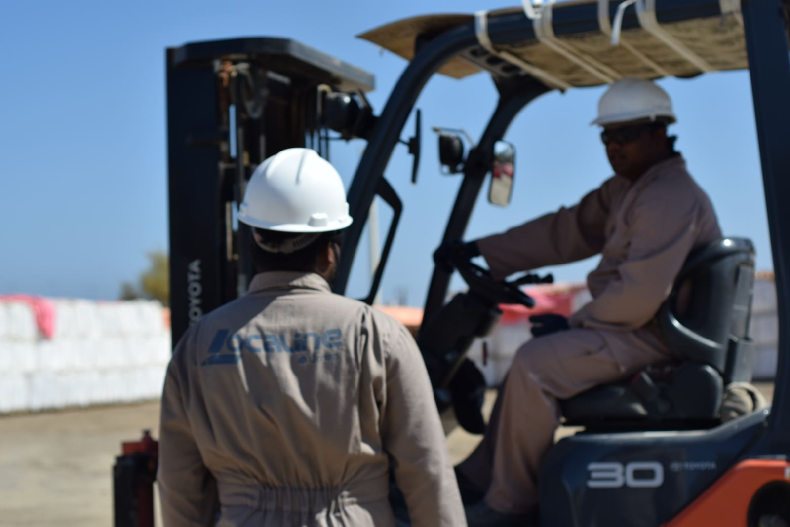
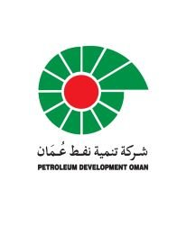

Omani SME, founded 2004. Supplying PDO HT Starch and Drilling Starch.
HT Starch and Drilling Starch; polymers (PAC LV, PHPA, xanthan gum, HEC); barite, bentonite, calcium carbonate.
KCl, calcium chloride, sodium chloride, ammonium chloride.
Storage, transport and call-off delivery to rig sites across Oman.
Sites: Al-Mabailah (Muscat), Sumail, Rusail and Sohar.

Lab QA at the group’s ISO 17025 laboratory. Dedicated HSE advisor and trained crews.

Petroleum Development OmanOOISSMB PetroleumAbraj OmanClients in UAE and Libya